灵语智造 LinguaCNC
AI 数控编程与三维仿真协同平台商业计划书
本版本面向正式申报、路演答辩与项目展示，围绕项目逻辑、核心功能、技术架构、商业模式、应用场景、财务预测与成果证明进行图文重构，兼顾专业性、展示性与竞赛审美。
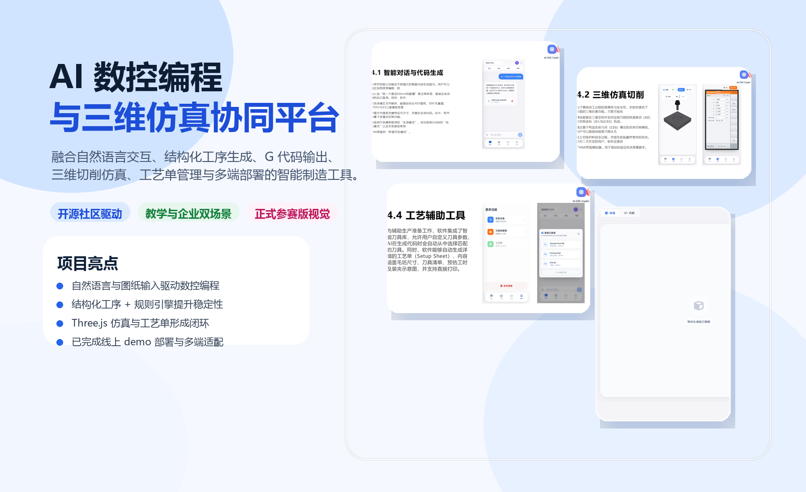
目录
本版本采用图文混排结构，兼顾正式申报场景的完整论证与路演答辩场景的视觉展示，以下为主要章节目录。
- 01一、执行摘要
- 02二、项目缘起与问题定义
- 03三、产业背景与政策机会
- 04四、市场痛点与需求分析
- 05五、用户画像与典型使用场景
- 06六、产品定位与价值主张
- 07七、产品总体方案
- 08八、核心功能模块
- 09九、系统架构设计
- 10十、AI 工序理解与多模型协同
- 11十一、G 代码生成与安全审查机制
- 12十二、三维仿真、多模态交互与多端部署
- 13十三、核心创新点
- 14十四、技术壁垒与知识产权规划
- 15十五、商业模式与收入结构
- 16十六、产品矩阵与定价策略
- 17十七、市场规模、竞争格局与项目定位
- 18十八、竞争优势与可替代性分析
- 19十九、营销推广方案
- 20二十、渠道合作与客户成功
- 21二十一、团队介绍与组织分工
- 22二十二、运营机制与项目管理
- 23二十三、财务预测与核心假设
- 24二十四、融资计划与资金使用
- 25二十五、实施路径与里程碑
- 26二十六、风险分析与应对措施
- 27二十七、社会价值、教育价值与产业价值
- 28二十八、可持续发展与成长空间
- 29二十九、竞赛展示重点与答辩建议
- 30三十、项目可行性结论
- 31三十一、附录一：源码实现依据总览
- 32三十二、附录二：产品流程示例
- 33三十三、附录三：功能、价值与收费映射
- 34三十四、附录四：财务测算详细口径
- 35三十五、附录五：阶段目标与关键指标
- 36三十六、附录六：术语表与常见问题
- 37三十七、附录七：学校试点合作方案
- 38三十八、附录八：企业试点合作方案
- 39三十九、附录九：项目版本规划
- 40四十、附录十：答辩演示脚本参考
- 41四十一、附录十一：教师、学生与企业三类价值清单
- 42四十二、附录十二：数据资产与知识库建设思路
- 43四十三、附录十三：渠道合作对象清单
- 44四十四、附录十四：中长期战略愿景
- 45四十五、附录十五：课程应用样例设计
- 46四十六、附录十六：企业采购决策逻辑
- 47四十七、附录十七：常见质疑与回应策略
- 48四十八、附录十八：阶段性成果展示清单
- 49四十九、附录十九：路演材料清单与准备建议
- 50五十、附录二十：结语
项目总览
从项目定义、核心价值、完成度与落地逻辑出发，快速建立评审对产品与商业方向的整体认知。
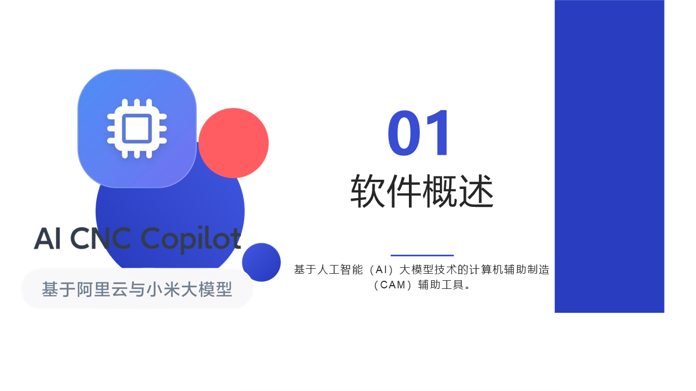
1. 项目一句话概括
灵语智造 LinguaCNC 是一款面向智能制造教育场景、创客应用场景和中小制造企业轻量化数字化升级场景的 AI 数控编程与三维仿真协同平台。它将自然语言交互、图纸与附件理解、结构化工序生成、G 代码输出、三维仿真、刀具管理、工艺单生成和多端部署整合为一个统一产品，帮助用户更快完成“从需求到程序、从程序到验证、从验证到交付”的闭环流程。
2. 我们解决什么问题
当前大量高校实训、创新团队打样、小型机加工厂样件生产，仍然面临三类高频问题。第一类问题是学习门槛高，传统 CAM 软件强大但复杂，学生和新手工程人员上手周期长。第二类问题是人工编程效率低，简单零件、标准工序和常见训练件仍需大量重复录入参数、手工设坐标、反复检查。第三类问题是验证成本高，一段代码生成之后，往往缺少直观且轻量的仿真反馈，导致教学不直观、企业试错成本偏高。
灵语智造并不是试图取代所有成熟工业软件，而是聚焦于“高频、标准、可验证”的数控编程入口场景，用 AI 把复杂的工艺表达翻译成可执行的工序对象，再通过规则引擎输出 G 代码，并立刻给出可视化仿真和工艺信息，从而大幅降低入门门槛，提升编程效率与教学效果。
3. 为什么现在做
当前正处于三种趋势叠加的窗口期。其一，生成式 AI 与多模态交互能力快速成熟，使得“中文描述加工任务”“上传图纸让系统理解工艺意图”成为现实。其二，国家持续推进智能制造、产教融合、职业教育数字化和中小企业数字化转型，市场对轻量、低成本、易部署的智能工具需求明显提升。其三，高校创新创业竞赛和实践教学越来越强调项目的真实可演示性与落地路径，灵语智造恰好具备代码、界面、仿真、部署四位一体的展示优势。
4. 项目当前完成度
结合当前代码可以确认，项目已形成可运行、可演示、可迭代的 MVP 原型，主要已实现能力包括：
- 支持文本对话驱动的工序理解与 G 代码生成。
- 支持 PDF、DXF、文本、图片等附件输入。
- 支持多模型调用与自动路由。
- 支持面铣、钻孔、轮廓、圆形型腔、矩形型腔、凸台加工等常见工序。
- 支持本地三维切削仿真、刀具路径播放和 STL 导出。
- 支持代码编辑、复制、下载及基础安全审查。
- 支持刀具库管理、会话历史记录和加工工艺单生成。
- 支持 Web、桌面端、移动端、PWA 等多端交付形态。
5. 商业落地逻辑
项目将采用“教育端验证产品价值，企业端放大商业价值，服务端增强收入结构”的发展路线。前期优先进入高校、职校、实验室、创客空间和竞赛训练场景，建立可复制案例和品牌认知；中期向中小制造企业拓展，以轻量化工艺生成和仿真验证提升生产准备效率；后期再通过私有化部署、行业模板、培训与赛事服务实现更高客单价和更强壁垒。
6. 本项目的核心判断
灵语智造的竞争力不在于“做一个会聊天的制造问答机器人”，而在于构建了一个围绕数控编程场景的闭环平台。用户给出一句中文描述或一份图纸，系统不仅能回答问题，还能生成工序、输出程序、显示仿真、审查风险、形成工艺单，并进一步在桌面端或移动端展示与使用。这种端到端闭环决定了项目既具备竞赛展示效果，又具备产品化方向和商业化基础。
二、项目缘起与问题定义
1. 项目缘起
灵语智造的产生，源于大学生团队在机械制造、创新设计、软件开发和 AI 应用交叉实践中的真实痛点。在学习与比赛过程中，团队发现许多同学能够理解零件结构、会用 CAD 画图，甚至对加工路径有初步认识，但真正进入数控编程环节时，往往会遇到两个明显断层：一是不会将工艺理解转换为标准化 G 代码；二是无法快速判断自己生成的程序是否合理、安全、可执行。
与此同时，团队也注意到，不少中小企业和创客团队在样件加工、小批量试制、教学工件制作过程中，不一定需要极其复杂的重型 CAM 工具，反而更需要一款更友好、更轻量、更便于学习和演示的智能工具。于是，团队将 AI 对话、多模态输入和数控编程逻辑结合起来，形成了灵语智造这一产品原型。
2. 问题的本质
从本质上看，数控编程并不只是“写代码”，而是一种跨越三个层级的转换能力。第一层是需求理解，即理解零件结构、加工目的和尺寸关系；第二层是工艺拆解，即判断先做什么、后做什么、选什么刀具、吃多少刀、坐标如何定义；第三层才是程序表达，即将工艺转化为机床可识别的标准指令。传统流程往往要求一个人同时熟练掌握三层能力，这也是门槛居高不下的根本原因。
灵语智造试图做的，就是让系统承担一部分“翻译”和“组织”工作。用户不必一开始就写出标准代码，而可以先用更自然的方式表达意图，系统再结合规则和上下文逐步完成结构化与程序化。这样不仅提高效率，也有助于学习者理解工艺与代码之间的关系。
3. 为什么不是简单套用通用大模型
通用大模型确实能回答“G01 是什么”“如何钻孔”这类知识问题，但在实际数控场景中，仅有问答远远不够。真正的问题在于：程序需要结构稳定、工序需要状态连续、坐标系需要明确、刀具选择需要受约束、仿真需要同步验证、导出格式需要适配设备。灵语智造采用的不是“让模型一次性自由发挥整段代码”的方案，而是让模型先输出结构化工序对象，再由规则引擎生成程序。这一做法更适合工业应用和竞赛展示，也更容易在后续发展中积累壁垒。
4. 问题定义
因此，项目最终定义的问题是：如何为高校、创客和中小制造企业提供一个低门槛、高直观度、可验证、可迁移的 AI 数控编程平台，使用户能够以更低成本完成数控程序生成与验证，并在教学、训练、展示和轻量生产中持续使用。
三、产业背景与政策机会
1. 智能制造正在从“自动化”走向“认知化”
在过去，制造业的信息化升级更多强调设备联网、软件集成和流程标准化；而在今天，越来越多的场景开始引入 AI 辅助理解、辅助决策和辅助生成能力。数控编程正是最适合落地生成式 AI 的环节之一，因为它既有相对清晰的规则边界，又存在大量重复性工序和参数化表达空间。对教育端而言，这是降低教学门槛的机会；对企业端而言，这是缩短生产准备周期的机会。
2. 教育数字化与产教融合提供了现实入口
高校、职业院校和实训基地正在持续推进数字化教学与产教融合建设。传统数控教学通常需要在理论知识、软件操作和机床实践之间频繁切换，而学生容易在复杂软件界面和抽象指令语法中丧失理解兴趣。灵语智造通过中文对话、图纸输入和三维仿真，把原本分散的学习步骤放进一套连续体验中，有利于教师讲授、学生练习和竞赛训练，也更符合当前教育场景对“可展示、可互动、可反复演示”工具的需要。
3. 中小制造企业数字化升级存在明显工具缺口
相较于大型工厂，中小企业在软件采购预算、人才储备和培训周期方面更敏感。它们并不总能承受重型工业软件的采购与维护成本，也很难持续依赖少数老师傅完成所有程序编制。在这类场景下，一款能够帮助新手快速完成标准工序生成、帮助管理者快速进行工艺审核、帮助老板快速看到仿真结果的工具，就具备较高价值。灵语智造不一定在第一天就进入复杂五轴加工，但完全可以先在标准件、教学件、样件、二维轮廓件等场景建立价值。
4. 大学生创业在该方向具有独特优势
大学生团队虽然在工业资源和商业化经验上不占优势，但在跨学科整合、产品体验、竞赛表达和快速开发方面具备突出优势。灵语智造的形成路径本身就具有明显的高校创新特色：用年轻用户能够理解的交互方式重构专业工具入口，用真实代码证明产品可行性，再通过教学与竞赛场景建立第一批真实用户。这种路径非常适合大学生创新创业项目从校园走向市场。
5. 政策机会与发展空间
从方向上看，灵语智造契合以下长期发展趋势：
- 契合智能制造与工业软件国产化升级方向。
- 契合职业教育数字化、实训平台智能化方向。
- 契合 AI 与垂直行业结合的创新应用方向。
- 契合高校创新创业项目强调“技术创新 + 场景落地 + 社会价值”的评审导向。
项目并不依赖单一政策红利生存，但明显受到整体产业升级趋势的支撑，因此具有较好的成长环境。
市场洞察
围绕传统 CAM 工具门槛、教学脱节、企业数字化痛点与目标用户需求，明确项目切入价值。
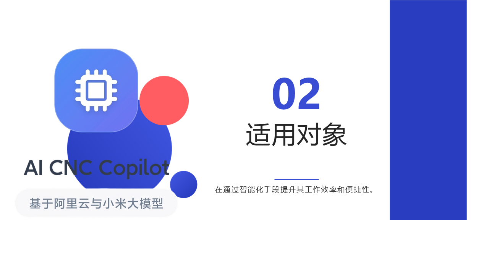
1. 痛点一：传统 CAM 软件强大但不够友好
传统 CAM 软件擅长复杂建模、路径规划和工业后处理，但对初学者并不友好。其问题主要体现在三个方面：第一，界面复杂、菜单层级深，学习路径长；第二，功能虽然全面，但很多用户只需要其中一小部分高频能力；第三，授权价格和培训成本让很多学校、实验室和小团队望而却步。对大学生团队而言，学会全部功能不现实；对中小企业而言，买得起不代表用得起、用得好。
2. 痛点二：人工编程重复劳动多
在大量基础加工任务中，编程工作本质上是重复性的。例如设定毛坯尺寸、确认坐标原点、选择面铣刀、输入孔位、设置进给、编制轮廓路径、检查退刀高度和程序结尾等。熟练工程师可以快速完成，但新手往往会在这些环节耗费大量时间。即便是熟练人员，也会因为重复劳动导致效率下降和错误概率上升。
3. 痛点三：教学与实操之间缺少连续体验
在传统教学中，学生经常在 PPT、黑板、代码示例、软件操作和机床实践之间来回切换。知识看似都学过，但很难形成“为什么这样下刀、为什么这样设坐标、为什么这里要退刀”的直观理解。灵语智造的优势在于，它把“说出来”“生成出来”“看出来”三件事放在同一个交互闭环内，能明显增强学习连贯性。
4. 痛点四：小团队缺少轻量工具
创新团队、创客空间、桌面级 CNC 用户和校内工作坊经常面对一种尴尬局面：重型工业软件太重，通用 AI 太虚，真正需要的是一套可以快速生成、快速验证、快速展示的轻量工具。灵语智造正是对这类空白地带的回应。
5. 痛点五：企业对智能化感兴趣，但缺少可信入口
许多中小企业已经意识到 AI 在制造中的潜力，但实际采购时顾虑很多，包括输出是否稳定、是否能看懂结果、是否可以修改、是否能结合现有设备、是否涉及数据安全。灵语智造选择“结构化工序 + 本地规则生成 + 可视化仿真 + 明确风险提示”的路线，就是为了给用户建立一条更可信的使用路径，而不是把所有风险都交给模型自由生成。
6. 需求归纳
综合来看，市场核心需求不是一个“大而全”的软件，而是一个“学得会、看得见、改得动、用得起”的智能平台。评委在判断项目价值时，最看重的通常也是这一点：项目是否真正抓住了用户最痛的环节，是否具备清晰场景，是否有现实推广基础。灵语智造在这三个问题上都给出了相对明确的回答。
五、用户画像与典型使用场景
1. 高校与职业院校
这类用户最重视教学直观性、实验可控性和学生参与度。教师希望一套系统能同时用于课堂展示、作业训练、创新项目指导和竞赛备赛；学生则希望能够通过交互快速看到结果，而不是被繁琐的操作阻断学习兴趣。灵语智造能够将对话、代码、仿真、工艺单整合到统一界面中，因此非常适合作为教学辅助平台和项目演示平台。
2. 创新创业团队与创客空间
这类用户通常人数少、设备有限、项目节奏快，尤其需要快速把设计转成可演示的加工程序。很多团队不具备完整 CAM 工程师能力，但又需要在比赛、样机制作、结构验证过程中频繁处理小批量件和验证件。灵语智造可帮助他们更快从“零件想法”走到“可演示刀路和代码”。
3. 中小制造企业
中小企业通常关注三件事：效率、风险和成本。它们可能不会立即将所有生产流程迁移到新平台，但非常愿意尝试对标准件、样件、外协件、练兵件使用更轻量的工具。灵语智造在这一阶段可先承担“辅助编程”和“教学训练”的角色，而非一开始就承担全部复杂生产任务。
4. 培训机构与设备厂商
职业培训机构和桌面级设备厂商也具备潜在合作价值。前者需要一个便于上手和展示的教学平台，后者则需要更好的软件体验来提升设备附加值。灵语智造可作为“软件+内容+服务”的组合能力参与合作。
5. 典型场景一：课堂教学
教师展示一个典型零件的加工需求，让学生用中文描述“在一块铝合金毛坯中央铣一个矩形型腔，再在四角钻孔”，系统生成工序对象和 G 代码，并在三维视图中显示去料效果。教师可以继续追问“如果毛坯加厚”“如果孔径改变”“下一步该如何精加工”，让学生在连续对话中理解工艺演变。
6. 典型场景二：创新比赛样件打样
学生团队完成 CAD 设计后，通过上传图纸或文本要求，让系统快速形成基础加工程序，并导出程序与工艺单。即便后续仍需人工微调，也能显著缩短从概念到可演示结果的时间。
7. 典型场景三：企业标准件辅助编程
一线工程人员输入常见孔板、凹槽、轮廓件、凸台件的加工需求，系统快速给出可修改的程序和仿真结果，减少重复性编程时间，并作为老师傅审核前的初稿，提高整体效率。
典型用户与应用对象
复用 PPT 中的应用对象页，将高校实训、企业工程人员与职业教育使用场景可视化呈现，增强评审对目标用户的直观理解。
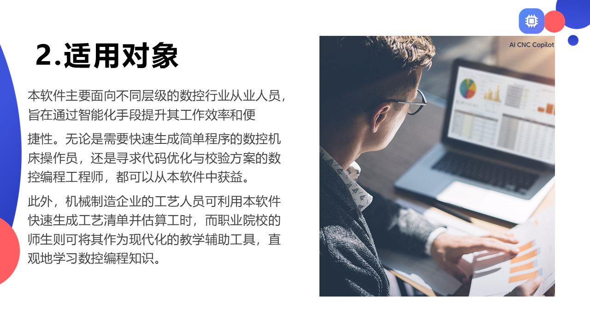
六、产品定位与价值主张
1. 产品定位
灵语智造的定位不是“大型重工业 CAM 替代品”，而是“AI 驱动的数控编程与仿真入口平台”。它覆盖用户从表达意图到生成代码、从代码到验证、从验证到展示的关键路径，尤其适合标准化、高频次、可视化、需要低门槛的场景。
2. 价值主张
项目的核心价值主张可以归纳为四句话：
- 用中文和图纸降低数控编程表达门槛。
- 用结构化工序提高 AI 输出稳定性。
- 用三维仿真提升程序可信度和教学直观性。
- 用多端部署和轻量化产品形态增强推广效率。
3. 对教育端的价值
对学校来说，灵语智造不是单纯的软件工具，而是一个能够串联理论教学、案例展示、学生练习、竞赛训练和项目孵化的平台。它使抽象指令变成可视化流程，有助于教师讲明白，也有助于学生学明白。
4. 对企业端的价值
对企业来说，灵语智造并不要求完全替换现有流程，而可以先成为一个轻量高效的辅助手段，用于基础工序生成、工艺验证、培训新人和建立数字化工作习惯。当企业习惯形成后，项目再逐步承接更深层的场景，商业化路径更稳健。
5. 对竞赛场景的价值
在创新创业大赛中，评委不仅看技术，也看呈现效果和落地逻辑。灵语智造具有明显的竞赛展示优势，因为它可以在现场直接演示输入、生成、仿真、导出全过程，天然具备“看得见”的创新性与完成度。
核心功能界面一览
产品不只是单点问答，而是围绕自然语言生成、三维仿真、代码编辑与工艺辅助构成完整工作台。
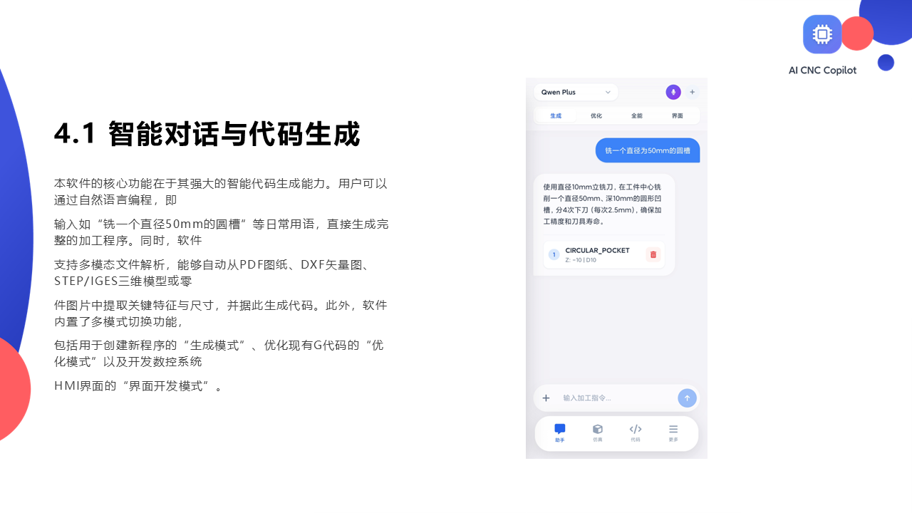
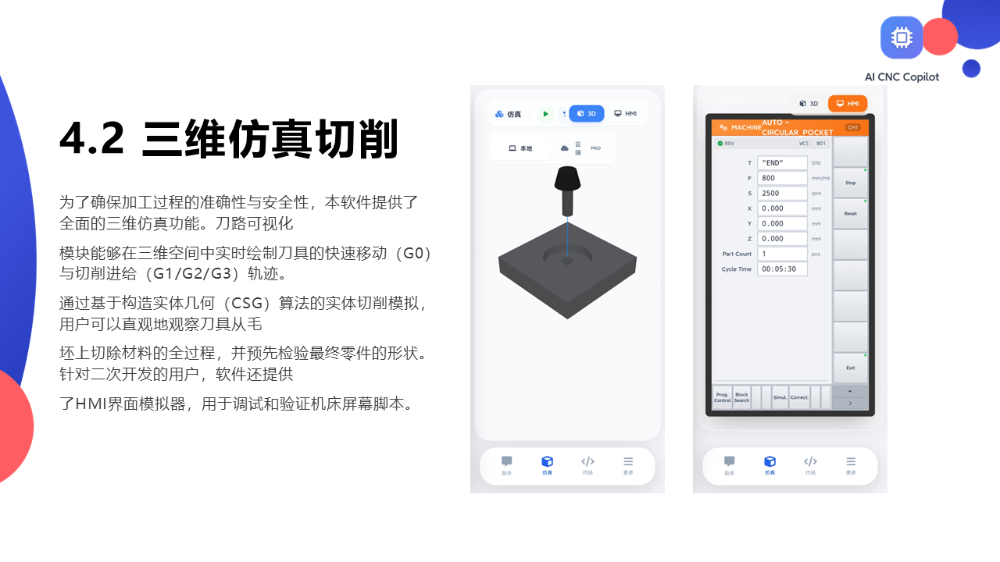
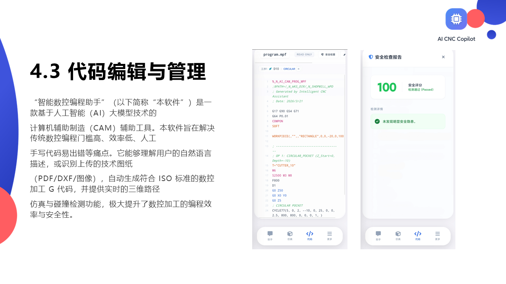
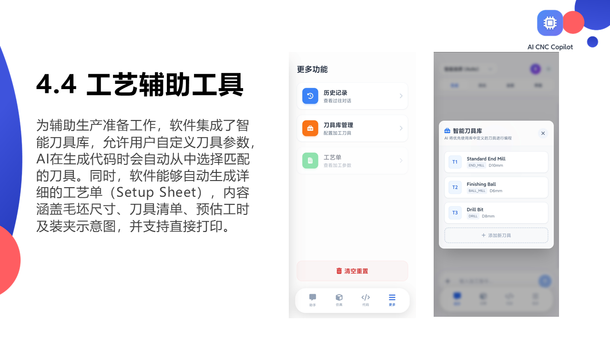
产品方案
展示灵语智造从输入、理解、生成到验证、管理与导出的完整闭环，以及对教育与企业双场景的适配能力。
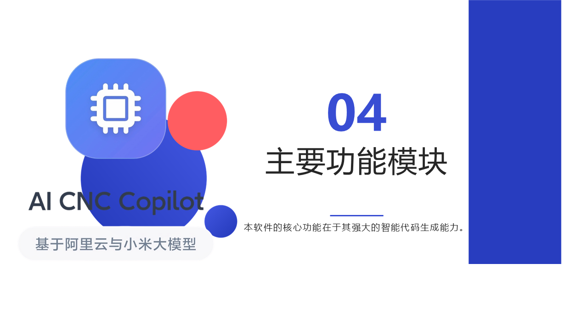
1. 闭环设计
灵语智造围绕“输入层、理解层、生成层、验证层、管理层、交付层”形成六层闭环。
- 输入层负责接收文本、图纸、附件和多模态信息。
- 理解层负责结合上下文和刀具信息生成结构化工序对象。
- 生成层负责根据规则引擎输出标准 G 代码。
- 验证层负责三维仿真、路径显示和安全审查。
- 管理层负责刀具库、工艺单、会话记录和参数追踪。
- 交付层负责多端发布、下载导出和移动展示。
2. 平台化而非单点化
很多 AI 产品只解决一个点，例如“帮你写一段代码”或“帮你识别一下图纸”。灵语智造的产品思路是平台化，而不是单点工具化。平台化意味着不同模块之间共享状态，例如当前毛坯、已有工序、刀具参数、历史消息和生成代码都在一个统一界面中协同工作，这使得产品在真实使用时更流畅，也更像一个完整系统。
3. 轻量化与专业性的平衡
项目追求的是“轻量不简陋，专业不沉重”的体验。一方面，界面交互尽量友好、信息分区明确，适合学生和新手；另一方面，生成逻辑和结构设计又紧扣工艺流程，不是完全脱离制造语境的炫技型 AI 产品。
4. 可持续扩展性
当前版本已经具备较好的扩展空间。例如，未来可继续增加更多后处理器、更多工序模板、更多行业案例库、更多安全校验规则，甚至接入私有知识库、企业机床参数和校内课程资源。这种可扩展性决定了项目不仅适合比赛，也适合后续真正创业孵化。
八、核心功能模块
1. 智能对话与附件分析
系统支持用户通过文本输入加工需求，并允许上传 PDF、DXF、文本、图片等类型附件参与分析。在交互逻辑上，系统会根据模式和附件类型自动组织提示内容，使用户能够用更自然的方式表达工艺意图。对初学者而言，这大幅降低了“先学会术语才能使用工具”的门槛。
2. 多模式工作流
从代码可见，平台设置了 GENERATE、OPTIMIZE、OMNI、SCREEN 等多种工作模式。它们分别对应生成工序、优化程序、全能实时交互和界面配置生成等不同能力。虽然当前项目的主赛道是数控编程，但这种模式化设计为未来扩展其他工业辅助场景预留了空间。
3. 刀具库管理
平台允许用户维护自己的刀具库，包括刀具类型、直径、名称和描述。与普通静态表单不同，刀具库会被注入到 AI 分析上下文中，从而让模型优先基于已有刀具配置输出建议。这一点非常关键，因为它体现出系统并非孤立生成，而是在逐渐形成“用户自己的加工语境”。
4. G 代码编辑与导出
生成后的程序可在代码面板中直接查看和编辑，用户可以复制到剪贴板、下载为文件，也可以进行二次微调。这一设计对企业场景和教学场景都很重要，因为它避免了“AI 一旦生成就无法修改”的问题，保留了人工确认与修正空间。
5. 基础安全审查
系统已经实现了基础代码审查逻辑，包括检查快速下刀到负 Z、切削时主轴未开启、进给率缺失、程序缺少 M30 结束指令等问题。这些规则虽然还不是工业级全量安全体系，但足以表明项目不是停留在“会写代码”的层面，而是已经开始关注可执行性和安全性。
6. 三维仿真与路径显示
三维仿真模块通过几何布尔运算模拟工件去料效果，并支持路径可视化、刀具模型展示、播放控制和 STL 导出。对于评委和用户来说，仿真模块是项目最强的可视化说服力之一，因为它把抽象的程序变成了可见的加工过程。
7. 工艺单与历史记录
平台可根据工序参数估算加工时间，生成包含毛坯、刀具、坐标系和预计工时的工艺单，支持打印或存为 PDF；同时支持历史会话保存，方便追溯不同对话下的生成结果。这些看似辅助性的功能，实际上显著提升了产品的完整性和商业化可行性。
8. 实时音视频交互
项目还包含实时音视频交互会话模块，支持麦克风和摄像头输入，为未来的远程教学、实训指导、设备辅导和多模态工业助手形态打开了想象空间。即使这一能力在当前商业化中不是首发核心，它依然显示出项目架构的前瞻性。
技术架构
从多模型协同、结构化工序、规则引擎、三维仿真到多端部署，展现项目的工程实现路径。
1. 前端交互层
项目以 React + TypeScript 为核心前端栈，主入口 App.tsx 超过五百行，承担状态管理、模块切换、消息组织、会话持久化、工序累积、毛坯跟踪和主流程编排等职责。组件结构上，ChatPanel、CodePanel、SimulationPanel、ToolLibrary、SetupSheet、HistoryDrawer、LiveSession 等模块职责清晰，形成了完整工作台式布局。
2. 服务与代理层
后端 server.ts 使用 Express 构建，并通过 Vite 中间件支撑开发模式。它承担标准 Gemini 请求代理、WebSocket 实时转发以及静态资源服务等职责。这样的设计确保 API Key 可以在后端统一管理，也为未来接入企业网关、私有部署和日志审计打下基础。
3. AI 分析与工艺生成层
services/modelService.ts 是项目的智能核心之一。该模块定义了基础系统提示、不同模式下的指令模板、多模型选择逻辑、历史消息注入逻辑、当前工序状态注入逻辑和附件拼接逻辑。它输出的不是任意文本，而是结构化 JSON，随后交给本地规则模块进一步处理。
4. 规则引擎与代码输出层
services/cncGenerator.ts 负责将结构化工序转换为可执行 G 代码，并包含基础安全审查函数。该模块的意义在于把不确定性的 AI 输出约束为确定性的规则程序，从而提升生成结果的一致性和可控性。
5. 仿真与渲染层
SimulationPanel.tsx 以 Three.js 为基础，同时结合 three-bvh-csg 等能力进行材料去除效果模拟。该模块不仅负责显示最终几何，还负责路径重建、刀具动画、云端仿真状态演示和 STL 导出等功能，是项目技术含量和展示效果最集中的部分之一。
6. 多端封装层
项目通过 Electron、Capacitor 和 PWA 实现多端适配。桌面端适合实验室和车间 PC 使用，移动端适合老师巡课、学生展示和现场查看，PWA 适合快速试用和轻部署。这样的多端能力，对于创业项目来说意味着更广的市场触达方式。
十、AI 工序理解与多模型协同
1. 多模型协同思路
项目并未把自己绑定到单一模型，而是支持 Gemini、通义千问、MiMo 等不同模型服务，并在 auto 模式下根据任务类型和复杂度动态选择模型。例如，界面配置和代码优化这类高结构稳定性任务更偏向强推理模型，而简单短对话则可路由到更轻量的快速模型。这种设计既提升体验，也控制成本。
2. 结构化 JSON 中间层
系统提示中明确要求模型输出 stock、operation、explanation 等结构字段，并约束坐标原点、工序类型、刀具类型、路径段格式等关键参数。正是这种中间层设计，使得项目具备从对话走向工程规则的能力，避免模型“自由发挥”导致程序不可控。
3. 上下文注入能力
模型服务层会将最近若干轮对话、当前刀具库信息、当前已有工序信息注入上下文。也就是说，当用户提出“继续下一步”“重新调整毛坯尺寸”“把孔径改为 8 毫米”这类问题时，系统并不是孤立理解，而是结合当前工艺状态做出连续推理。对真实使用场景而言，这比单轮问答更有价值。
4. 多模态输入处理
对图片类附件，系统会以图像数据形式附带给模型；对文本、PDF、DXF 等非图像附件，则以文件内容或内容描述形式拼接进提示中。虽然当前对图纸类输入的理解仍可继续增强，但现有实现已表明平台具备多模态扩展思路，不局限于纯文字对话。
5. 技术路线的优势
这一路线最大的优势在于兼顾了灵活性和稳定性。灵活性来自自然语言与多模态交互，稳定性来自规则化结构输出。对于评委而言，这是一条比较成熟的创业技术路径，因为它既利用了大模型优势，又没有完全把风险交给模型本身。
产品界面与上线成果
图中展示项目的真实界面表达与线上 demo 形态，体现产品已具备可访问、可展示、可传播的基础形态。
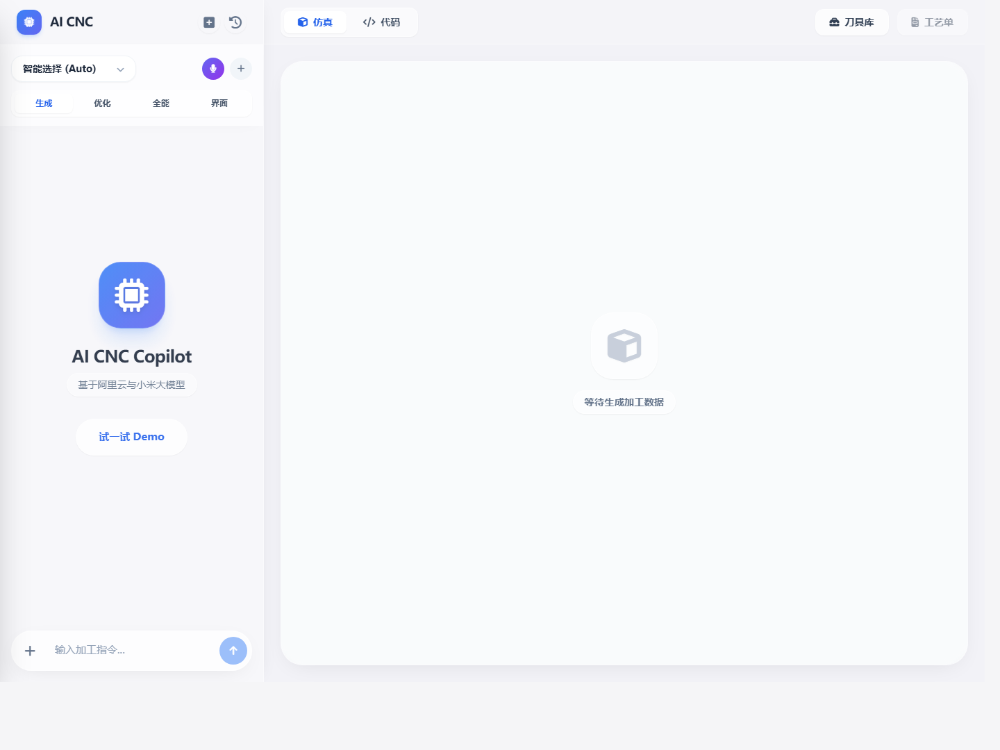
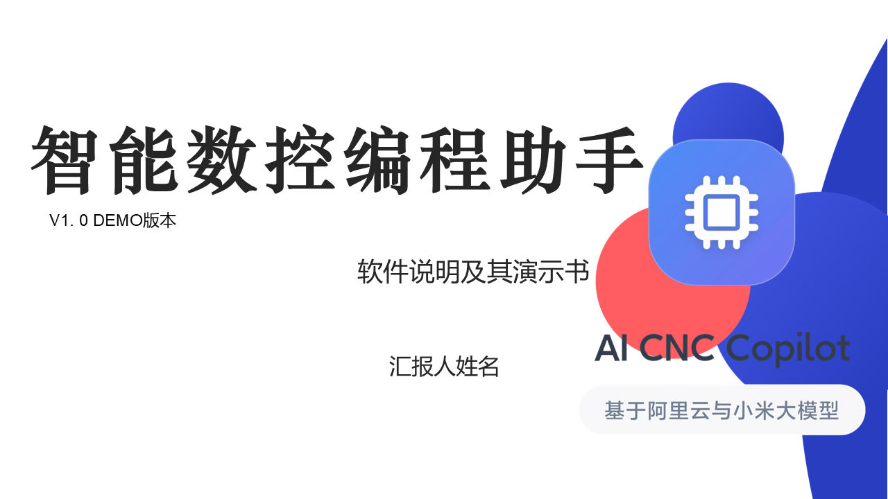
十一、G 代码生成与安全审查机制
1. 代码生成逻辑
cncGenerator.ts 会根据工序类型依次生成程序头、单位设置、工件定义、换刀、主轴控制、工序调用和收尾代码。对矩形型腔、圆形型腔、轮廓加工、钻孔、面铣和凸台等不同工序，系统使用不同的模板和循环调用方式，从而保证输出结果符合常见数控加工表达。
2. 工序连续性
系统支持在多步加工中累积工序，新的工序会基于当前毛坯和已有工序继续生成，而不是每次清空重来。这一机制使得“先粗加工、再钻孔、后精修”的连续加工流程成为可能，也让系统更像一个真实工艺助手。
3. 路径段表达
在轮廓加工和复杂凸台加工中，系统使用路径段数组表达线段与圆弧，包含起点、终点、圆弧中心等信息。这种表达方式有利于后续生成 G1、G2、G3 等指令，也便于仿真模块重建刀路轨迹。
4. 安全审查要点
基础安全审查目前主要覆盖四类问题：
- 快移指令下刀至负 Z 造成撞刀风险。
- 切削过程中主轴未启动。
- 进给率未设置。
- 程序结尾缺失 M30 或 M02。
虽然这还不是工业级的全部规则，但它已经体现出项目在安全可靠性上的工程意识，也为后续引入更精细的机床、刀具、工件约束预留了空间。
5. 规则引擎的商业意义
对创业项目来说，规则引擎非常重要，因为它决定了平台未来是否能够形成自己的标准库、工艺库和差异化能力。模型可以被替代，但结合业务场景沉淀下来的规则体系不容易被替代。灵语智造在这一点上已经迈出了关键一步。
十二、三维仿真、多模态交互与多端部署
1. 仿真价值
在数控编程产品中，仿真不仅是一个“好看的功能”，更是建立用户信任的关键环节。用户看到的不应该只是代码文本，而应该是材料去除过程、刀具移动路径、最终零件几何和可能存在的风险。灵语智造通过本地仿真模块，将生成逻辑与可视化紧密结合，显著提升了产品说服力。
2. 本地仿真能力
当前项目已实现本地三维场景初始化、毛坯建模、刀具建模、路径重建、动画播放和几何布尔运算等关键能力。对教育和竞赛场景而言，这已经足以支撑完整演示；对企业场景而言，也能为基础验证提供直观帮助。
3. 云端仿真预留
代码中还预留了云端仿真服务接口和云端状态交互流程。当前实现更偏演示型，即通过模拟调用流程呈现“连接云端 GPU 服务”的交互体验，而真正的高精度云端仿真仍有进一步落地空间。对外表述时，我们会保持诚实：这是清晰的产品路线，而不是已完全上线的能力。
4. 实时音视频交互
LiveSession.tsx 已实现音频输入、视频采样、实时会话连接、音频回放与视觉化反馈等机制。这一模块特别适合未来扩展到“老师远程指导学生操作”“设备教学直播辅导”“现场用手机问机床工艺问题”等更有传播性的应用形态。
5. 多端部署价值
项目同时具备桌面端、移动端和 Web 端形态，意味着它不仅能在答辩现场展示，还具备真正部署到不同使用环境的潜力。对于创业项目来说，多端能力往往直接影响推广效率和第一批用户的触达方式。
创新壁垒
从交互逻辑、技术路线、教学友好型工业体验与可持续知识积累四个层面提炼项目的核心竞争力。
1. 从自然语言到结构化工序的桥接创新
项目最大的创新之一，是将通用大模型的自然语言能力与数控工艺的结构化表达连接起来。用户并不需要直接书写标准指令，而是先以更自然的方式表达工艺需求，系统再输出结构化工序对象，最后生成 G 代码。这种桥接方式兼顾了 AI 友好性与工业可执行性。
2. 从“会回答”到“会生成、会验证、会管理”
大量 AI 项目停留在问答层，而灵语智造通过会话管理、仿真展示、刀具库、工艺单和代码导出，把产品从单纯问答工具提升为工作流平台。评委往往对“闭环程度”非常敏感，这也是本项目的重要亮点。
3. 多轮工艺状态感知
系统会根据当前已有工序推断下一步加工状态，例如当前 Z 起点、已完成工序与当前毛坯定义，这使得对话不是静态问答，而是动态工艺协作。这样的设计比“每次从零开始”的生成方式更贴近真实编程过程。
4. 教学友好型工业交互
项目在界面上同时提供对话区、仿真区、代码区和工具区，形成适合教学与展示的可视化结构。它不像传统工业软件那样依赖复杂操作，也不像普通聊天工具那样缺乏专业反馈，具备明显的“教育友好型工业产品”特征。
5. 开放模型与多端生态兼容
项目当前已具备多模型接入能力和多端发布能力，这意味着它在商业化过程中不容易被单一平台锁定，也更容易根据不同客户需求做灵活交付。
十四、技术壁垒与知识产权规划
1. 技术壁垒来自连续积累，而不是单次创意
AI 创业项目最大的误区之一，是把壁垒理解成“一个特别好的提示词”。实际上，真正的壁垒来自连续积累，包括工艺提示模板、规则生成逻辑、交互流程、用户数据、案例库、刀具库和部署经验。灵语智造的方向正好适合这种持续积累，因为每次教学案例、每个试点场景、每一类零件模板，都会沉淀为新的产品资产。
2. 当前可积累的壁垒类型
项目未来可逐步形成以下几类壁垒：
- 面向数控场景的结构化提示模板和上下文组织逻辑。
- 面向不同工序和机床体系的规则生成模块。
- 面向教学和企业双场景的交互体验设计。
- 面向典型零件的案例库与标准工艺模板。
- 面向学校与企业的部署、培训和服务方法论。
3. 知识产权规划
项目未来可从三个层面规划知识产权：
- 软件著作权：覆盖核心平台和模块。
- 商标与品牌：围绕“灵语智造 LinguaCNC”构建品牌识别。
- 核心方案专有化：将关键工艺模板、行业数据和客户知识库作为商业秘密管理。
4. 对竞赛而言的意义
评委不一定要求大学生团队一开始就拥有极高壁垒，但非常看重团队是否理解“未来壁垒如何形成”。灵语智造在这方面的回答是清晰的：先通过教学与试点积累案例，再通过规则与模板形成产品差异，再通过私有化和数据资产构建长期壁垒。
商业化路径
围绕教育版、企业版、私有化部署与服务收入设计增长路径，强调先验证、后放大的创业节奏。
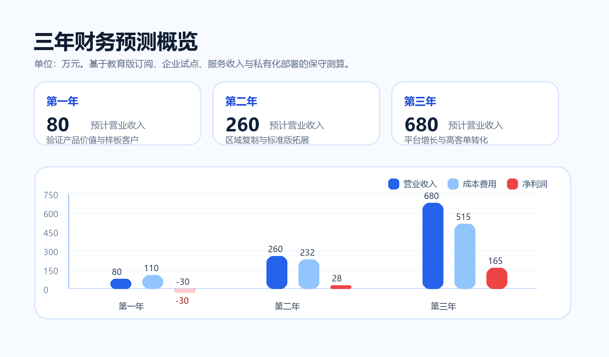
1. 总体商业模式
项目采取“教育版订阅 + 企业版订阅 + 私有化部署 + 培训服务 + 赛事服务”的复合收入结构。这样的设计有两个优点：一是可以让项目在早期就有多种现金流入口，降低单一市场波动风险；二是不同收入形式对应不同发展阶段，有利于团队先做验证、再做放大。
2. 教育版订阅
教育版主要面向高校、职业院校、实验实训中心和培训机构，提供教师账号、学生使用权限、课程案例、竞赛演示支持和部分本地化部署服务。教育版的核心价值不只是软件本身，还包括课程配套、案例资源和教学展示效果。
3. 企业版订阅
企业版面向中小制造企业，重点提供基础工序生成、代码审查、仿真演示、刀具库和工艺单能力。企业版强调的是效率提升、培训辅助和标准件场景应用，而不是一开始替代所有生产软件。
4. 私有化部署
对于数据保密要求更高的客户，项目可提供私有部署与定制化知识库服务，包括企业内部机床规则、刀具库模板、标准零件模板和组织账号体系。私有化业务虽然签约周期较长，但客单价更高，也更利于形成稳定客户关系。
5. 培训与赛事服务
由于项目天然适合教学和展示，培训与赛事服务将成为一个重要补充收入来源。团队可为学校提供竞赛项目辅导、实训营、示范课和案例共建，也可为企业提供新员工培训和轻量化数字化辅导。
6. 收入结构演进逻辑
项目在早期可能更多依赖教育版和赛事培训服务建立现金流；中期依靠企业标准版和定制项目放大收入；后期则通过私有化部署、行业模板和渠道合作提升利润率。这样的结构符合大学生创业团队“先轻后重、先验证后规模”的成长规律。
十六、产品矩阵与定价策略
1. 教育体验版
面向校内试点课程和竞赛团队的小规模体验版本，可提供限定账号数、基础生成能力和演示支持，主要作用是降低首次进入门槛，形成试点案例。
2. 教育标准版
适用于院校正式部署，包含教师端、学生端、基础课程案例、历史记录和工艺单功能。建议定价区间可设置为每校每年数万元级别，便于学校通过实验教学和竞赛经费采购。
3. 企业标准版
面向中小制造企业，建议采用按年订阅或按席位收费模式，核心功能包括标准工序生成、仿真验证、代码导出、刀具库和基础技术支持。标准版要强调“效率工具”属性，降低客户试用阻力。
4. 私有化增强版
针对更高要求客户，可提供本地部署、独立数据库、知识库接入、权限控制和定制模板。私有化版本不以低价竞争，而是以数据安全、组织适配和长期服务为价值点。
5. 服务型产品包
围绕培训、竞赛辅导、课程共建和设备配套，还可形成服务型产品包。相比纯软件定价，这类产品包更适合项目早期快速形成案例和口碑。
6. 定价原则
项目定价会坚持三条原则：
- 先强调价值验证，再追求高溢价。
- 让学校和中小企业买得起、用得起、愿意续费。
- 保持软件订阅与服务收入之间的动态平衡。
十七、市场规模、竞争格局与项目定位
1. 可服务市场的判断方法
本项目不盲目追求宏大叙事，而是从实际可进入市场出发。第一层是高校、职校、实训基地、培训机构构成的教育与训练市场；第二层是创客空间、学生创业团队和桌面设备用户构成的轻量制造创新市场；第三层是标准件、样件、小批量件场景较多的中小制造企业市场。三类市场加总形成项目的核心可服务市场。
2. 市场进入顺序
从创业路径看，最容易进入的是教育与竞赛市场，因为这类用户更愿意尝试新产品，也更看重展示效果与教学价值。其次是创客和设备配套市场，这类场景对轻量工具接受度高。最后才是企业标准化应用和私有化部署。这样的进入顺序能有效降低创业初期的获客难度。
3. 竞争格局
灵语智造面临的竞争对象主要分为三类：
- 传统 CAM 软件：专业性强，但门槛高、成本高。
- 通用大模型工具：交互灵活，但缺乏工程闭环。
- 单点型小工具：解决局部问题，但不具备平台能力。
4. 项目定位
项目不会与大型工业软件在全功能维度正面硬拼，而是定位于“AI 数控编程入口平台”和“教学友好型制造智能工具”。这个定位既能避开正面竞争，又能发挥项目在体验和场景方面的优势。
5. 为什么定位合理
从团队资源看，这一路径现实可行；从市场需求看，这一路径切中痛点；从产品形态看，这一路径更容易形成案例与传播。因此，该定位既符合创业项目的资源条件，也符合市场教育成本最低的原则。
十八、竞争优势与可替代性分析
1. 相比传统 CAM 软件
灵语智造的优势在于更低门槛、更强交互性、更适合教学与演示，以及更轻量的部署方式。它的短板在于目前对复杂高阶工艺的支持深度还不及成熟工业软件。因此，项目会选择适合自己的切入口，而不是盲目与成熟厂商比拼全量功能。
2. 相比通用大模型问答工具
灵语智造的优势在于围绕数控场景建立了结构化约束、状态管理、仿真验证和工艺管理闭环，能够把“会说”真正变成“会做”。这也是本项目最核心的差异点之一。
3. 相比单点式工具
单点工具可能只支持图纸识别、只支持程序输出，或者只支持路径演示。灵语智造的竞争力在于模块协同和场景完整性。对于评委和客户来说，完整性往往比某个单点能力更重要。
4. 替代性分析
在短期内，用户当然可以用传统软件、通用 AI 或脚本工具拼凑完成工作，但那种方式学习成本高、体验分散、难以教学展示。灵语智造的价值就在于用一套统一体验把原本离散的步骤重新组织起来，从而创造新的使用效率和新的产品认知。
5. 竞争策略
项目不会以“替代一切”为口号，而会以“成为高频入口”为目标。一旦入口建立，未来无论是继续向上扩展复杂工艺，还是向外扩展课程资源和行业模板，都会更有基础。
推广落地
通过校园样板、赛事传播、内容运营、企业试点与渠道合作形成低成本获客与高可信转化的组合路径。
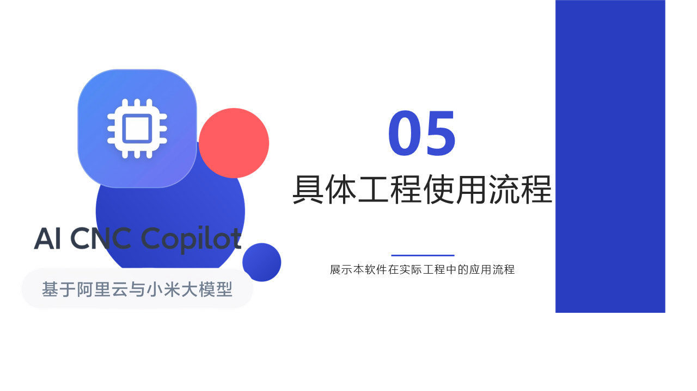
1. 推广总思路
项目将采用“校园样板 + 赛事传播 + 内容运营 + 企业试点 + 渠道合作”的组合策略，形成由近及远、由轻到重的推广路线。
2. 校园样板
校园是项目天然的第一战场。团队可以优先在本校或周边院校开展课程演示、实训展示和竞赛试用，通过真实课堂形成样板案例，并借助教师群体建立口碑。
3. 赛事传播
创新创业赛事、智能制造赛事和机械设计类赛事都是天然传播节点。灵语智造由于演示效果强，适合通过短视频、路演录屏、案例讲解等形式传播“自然语言生成工序 + 三维仿真验证”的核心亮点。
4. 内容运营
项目可持续发布案例内容，例如“10 个适合教学演示的数控工件”“如何用中文描述一个型腔加工任务”“AI 生成 G 代码后如何做风险检查”等。通过内容积累，项目能建立专业形象并吸引更多潜在试用用户。
5. 企业试点
企业推广初期以试点为主，重点选择标准件和样件场景较多、愿意尝试数字化工具的客户，通过低风险、小范围、快反馈的方式逐步建立信任。
6. 开源与开发者生态
项目本身具备开源社区基因，适合吸引对 React、AI、Three.js、工业软件感兴趣的开发者参与。对于大学生项目而言，社区不仅能降低研发成本，也有助于形成长期品牌资产。
二十、渠道合作与客户成功
1. 为什么必须做客户成功
对于教育和企业软件来说，客户买的从来不只是功能，还包括“能不能真正用起来”。因此，项目不能只重研发、不重落地，而要建立基础的客户成功体系，帮助用户完成从注册、试用、学习、使用到续费的全过程。
2. 教育侧合作方式
与学校合作时，可采取“课程试点 + 教师培训 + 学生训练 + 竞赛共建”的模式。这样一来，项目不只是卖软件，而是参与到学校教学成果和竞赛成果形成过程中，更容易得到持续支持。
3. 企业侧合作方式
对企业而言，最有效的不是空谈概念，而是先给出一个标准化场景试点，例如孔板、凸台件、简单轮廓件等，通过一两个典型工件证明效率提升和可用性，再逐步扩大使用范围。
4. 设备厂商与培训机构
设备厂商希望通过更好的软件体验提升设备价值，培训机构希望通过更好的教学体验提升课程转化。灵语智造与两者均有合作空间。对创业团队而言，这类合作还能降低独立获客成本。
5. 客户成功指标
项目早期可重点跟踪以下指标：
- 新用户试用转正式使用的比例。
- 学校教师的活跃度与课程复用率。
- 企业试点后的续用率。
- 用户每周生成次数、仿真次数和工艺单导出次数。
- 客户推荐意愿和案例复购率。
团队与资源
突出团队跨学科能力与项目推进机制，体现从大学生项目走向可持续创业团队的组织基础。
1. 团队总体特点
灵语智造团队最大的优势在于跨学科。项目既需要前后端和 AI 开发能力，也需要数控工艺理解、教学沟通能力和商业表达能力。大学生团队在跨界整合、产品体验和快速迭代方面更具活力，这也是项目得以快速成型的重要原因。
2. 核心岗位分工建议
- 项目负责人：负责整体方向、资源整合、比赛答辩、项目管理与商务推进。
- 技术负责人：负责系统架构、版本管理、工程质量和关键模块实现。
- AI 与算法负责人：负责模型接入、提示策略、数据组织和结构化输出设计。
- 制造工艺负责人：负责工序逻辑、刀具模板、案例验证和企业需求沟通。
- 运营负责人：负责校园推广、教师沟通、内容发布和用户反馈闭环。
3. 组织机制
为了让学生创业团队保持稳定推进，建议建立双周迭代机制和月度里程碑制度。技术开发、场景验证、市场推进和材料准备要同步推进，避免出现“代码做得很多、用户却没有”的问题。
4. 导师与顾问
项目建议引入三类外部支持力量：
- 校内教师导师：保证学术与教学场景匹配。
- 企业导师：提升工艺与商业场景真实性。
- 创业导师或财务顾问：帮助规范融资、合同、财务和发展路径。
5. 对评委的呈现重点
团队介绍在答辩中不应只讲成员履历，而要强调团队结构是否覆盖了“技术、工艺、运营、落地”四条主线。只要这四条主线完整，评委通常会认为团队具备继续推进的基础。
二十二、运营机制与项目管理
1. 产品迭代机制
项目建议采用“需求收集 - 原型验证 - 小范围试用 - 快速修正 - 场景沉淀”的闭环方式。对于教育端用户，重点收集教师授课逻辑、学生理解难点和案例资源需求；对于企业端用户，重点收集程序稳定性、设备适配和输出效率相关反馈。
2. 版本管理机制
从当前代码结构看，项目已具备较好的模块拆分基础，后续可以进一步强化版本管理、测试流程和发布机制，使项目从竞赛型代码逐步走向产品型代码。
3. 数据与案例沉淀机制
每完成一个课程案例、一个标准零件模板、一次企业试点，都应沉淀成可复用的产品资产。这些资产将成为后续产品升级和市场推广的重要基础。
4. 质量控制机制
为了让生成式系统更可靠，项目需要建立“模型输出 + 规则校验 + 人工复核 + 仿真验证”的多重质量控制路径。当前已有基础审查与仿真模块，未来可继续扩充规则和测试集。
5. 团队协同机制
学生创业团队最常见的问题不是没有创意，而是协同混乱。项目后续建议在任务拆分、文档沉淀、问题跟踪和版本回滚方面建立更清晰流程，从而提升持续交付能力。
二十三、财务预测与核心假设
1. 财务预测原则
项目财务预测将坚持保守口径，不夸大收入、不压低成本。前两年重点不在利润最大化，而在于产品打磨、案例建立、试点转化和品牌认知形成。对于大学生创业项目而言，这样的预测更真实，也更容易让评委信服。
2. 收入假设
收入主要来自四部分：教育版订阅、企业标准版订阅、私有化部署与定制服务、培训与赛事服务。教育版和培训服务更适合前期形成现金流，企业版和私有化服务则更适合中期放大收入规模。
3. 成本假设
成本主要包括研发投入、模型调用与服务器成本、试点交付成本、市场推广成本、办公与行政成本、知识产权和合规成本。由于项目具备软件平台属性，随着产品标准化程度提高，边际交付成本将逐步下降。
4. 第一年预测
第一年定位为产品验证期。目标是完成若干学校试点、若干企业试点，并形成一批教学案例与展示样板。预计收入来源以教育订阅、培训服务和少量试点付费为主，总体收入相对有限，但会为第二年规模化打下基础。
5. 第二年预测
第二年定位为区域复制期。目标是在已有案例基础上提升签约效率，扩大教育客户数量，并开始引入更多企业标准版客户。此阶段收入预计显著增长，同时成本结构也会更加清晰。
6. 第三年预测
第三年定位为平台增长期。若教育端形成稳定口碑、企业端形成可复制试点路径，项目将逐步向私有化部署和行业模板服务延伸，毛利率和客单价都会获得提升。
三年财务与增长测算
围绕营业收入、成本费用与净利润变化做图示化表达，提升财务页的可读性与路演展示效果。
二十四、融资计划与资金使用
1. 融资目标
项目计划寻求种子轮或校友基金、天使投资人、政府创业扶持资金等多元化支持，总融资需求可按 120 万元左右设计。对于当前阶段的项目而言，这一规模既足以支持关键研发与试点，又不会显得脱离实际。
2. 资金使用比例
- 研发投入：用于提升图纸解析、工艺模板、规则引擎、部署与测试能力。
- 数据与案例建设：用于沉淀行业案例、教学模板和零件库。
- 市场与试点交付：用于学校和企业场景试点、材料制作和培训支持。
- 基础运营：用于办公、差旅、知识产权和日常管理。
3. 融资后的核心目标
融资不是为了“证明项目很大”，而是为了让项目完成三个关键跃迁：从演示原型走向稳定产品，从单点案例走向批量试点，从学生项目走向真正可经营的创业团队。
4. 投资人逻辑
如果从投资视角看，灵语智造的吸引力在于方向清晰、场景明确、成本结构可控、用户进入路径合理，并且具备显著的教育和工业双重价值。其成长空间来自行业模板、客户数据、私有化部署和生态合作，而不仅仅来自软件订阅本身。
实施规划
以清晰阶段目标和里程碑安排，说明产品如何从原型打磨、样板验证走向标准化推广与商业交付。
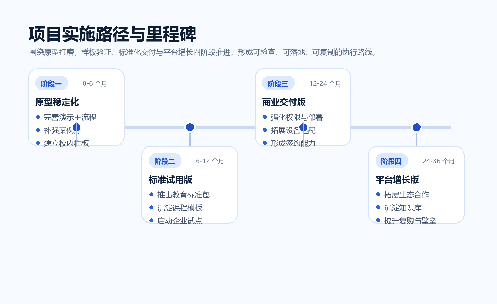
1. 第一阶段：0 至 6 个月
重点任务是打磨原型稳定性、完善关键展示流程、增加典型零件案例，并完成至少若干学校或实验室试点。这个阶段的核心关键词是“能演示、能试用、能被理解”。
2. 第二阶段：6 至 12 个月
重点任务是推出教育版标准产品包，补齐课程模板、案例库和基础部署方案，同时开始布局企业试点。这个阶段的关键词是“有标准、有案例、有反馈”。
3. 第三阶段：12 至 24 个月
重点任务是提升企业应用稳定性、扩展设备适配范围、完善私有化部署和权限管理能力，并构建区域渠道合作。这个阶段的关键词是“可复制、可部署、可签约”。
4. 第四阶段：24 至 36 个月
重点任务是形成教学场景、企业场景和服务场景的多元收入结构，并通过行业模板、案例资产和客户成功体系建立更深壁垒。这个阶段的关键词是“平台化、规模化、生态化”。
5. 里程碑管理
每一个阶段都应设置明确里程碑，例如完成多少案例模板、签下多少试点、形成多少使用数据、完成哪些规则升级。评委往往更认可这种“能被检查的成长路线”，而不是空泛的长期愿景。
阶段里程碑总览
以四阶段时间轴梳理产品从原型、试点、交付到平台化增长的实施路径，辅助评审快速理解节奏安排。
二十六、风险分析与应对措施
1. 技术风险
技术风险主要体现在模型输出不稳定、复杂工艺支持不足和设备适配范围有限。应对策略是坚持结构化输出与规则引擎路线，逐步扩大工艺覆盖范围，并在产品外部表达上对能力边界保持诚实。
2. 市场风险
市场风险包括教育客户预算周期长、企业客户决策链条长和用户尝鲜后不持续使用。应对策略是从高频、低风险、展示性强的场景切入，降低初次试用门槛，并通过服务与培训提高留存率。
3. 数据与合规风险
企业客户可能担心图纸和工艺数据泄露，学校客户也可能关注平台稳定性与本地部署能力。应对策略是推进后端代理、部署选项、日志规范和权限控制体系。
4. 团队风险
大学生团队常见风险在于成员流动、时间冲突和执行节奏不稳定。应对策略是通过导师制度、文档制度、里程碑制度和核心岗位备份机制降低波动。
5. 财务风险
创业早期现金流波动较大，若收入增长慢于研发和推广投入，容易出现资金紧张。应对策略是优先发展回款更快的教育和培训业务，同时控制研发节奏与市场投放节奏。
6. 竞争风险
随着 AI 与工业软件结合的热度提升，市场上可能出现更多类似工具。应对策略是尽快进入真实场景、建立案例、沉淀模板和客户关系，以先发落地形成优势。
二十七、社会价值、教育价值与产业价值
1. 社会价值
灵语智造并不是为了替代制造从业者，而是帮助更多人更低门槛地进入制造领域。它能降低学习障碍、增强实践兴趣、促进跨学科协作，对制造人才培养具有明显正向意义。
2. 教育价值
对学校而言，项目能把抽象代码、复杂工艺和三维结果统一到一套平台中，有助于提高课堂效率、增强学生理解和提升竞赛准备质量。对于产教融合和实训教学改革来说，这是一种非常契合的产品形态。
3. 产业价值
对企业而言，项目可先承担低风险的辅助编程和培训角色，帮助企业建立数字化编程习惯、降低重复劳动和新人培养成本，进而推动更深层的数字化升级。
4. 就业与人才培养价值
项目还能培养既懂 AI 又懂制造、既懂产品又懂应用的复合型人才。这种复合能力本身就是未来工业数字化和智能制造人才体系中非常稀缺的一类。
二十八、可持续发展与成长空间
1. 从工具到平台
灵语智造未来的发展方向不应仅停留在一个工具，而应逐步成长为围绕教学、竞赛、实训和轻量加工的智能制造平台。平台化意味着更多案例、更多模板、更多协作关系和更强用户粘性。
2. 从生成到知识库
随着用户案例增加，平台可以沉淀零件模板、工艺模板、刀具模板、设备模板和课程模板，形成可查询、可推荐、可复用的知识资产。
3. 从单点产品到生态合作
项目可逐步与院校课程、设备厂商、培训机构、地方产业服务平台合作，共同构建“软件 + 课程 + 设备 + 服务”的轻生态。
4. 从本地案例到区域复制
只要首批样板学校和样板企业跑通，项目就能通过课程共建、案例包复制和标准试点模板在更大范围复制。对于创业团队而言，这正是从“好项目”走向“好生意”的关键一步。
二十九、竞赛展示重点与答辩建议
1. 最好讲清楚的三句话
第一句话是：我们不是单纯做聊天机器人，而是在做 AI 数控编程闭环平台。第二句话是：我们已经有可验证代码和可运行原型，而不是停留在概念。第三句话是：我们先从教育与轻量制造场景切入，再向企业场景扩展。
2. 最打动评委的演示路径
答辩演示建议采用以下顺序：输入自然语言或上传图纸，展示系统生成工序和程序，再切换到三维仿真，最后展示工艺单或多端界面。这样的演示路径最能让评委快速理解产品闭环。
3. 评委常问问题及建议回答
- 为什么不直接用通用大模型？ 因为工业场景需要稳定结构、状态连续和规则约束，通用模型本身不具备完整闭环。
- 为什么你们能做？ 因为团队具备技术、工艺和产品整合能力，并已完成真实代码和原型验证。
- 为什么市场会买单？ 因为教育端需要更友好的智能教学平台，企业端需要更轻量的辅助编程工具，两端都有明显需求。
4. 材料呈现建议
如果用于正式申报，建议把本商业计划书、系统截图、源码结构图、演示视频和典型案例一起配套提交。材料之间越相互印证，项目可信度越高。
三十、项目可行性结论
综合项目方向、代码完成度、市场切入口、商业模式和团队能力，灵语智造具备较强的可行性。它不是一个停留在概念层的 AI 叙事项目，而是已经完成关键闭环搭建、具备明确用户场景、能够在教育与轻量制造两个方向持续扩展的创业项目。
其创新性体现在技术路线和交互方式上，其落地性体现在已有原型和清晰路径上，其成长性体现在市场空间、模板沉淀和平台化扩展能力上。对中国大学生创新创业大赛而言，灵语智造符合“技术有新意、产品能展示、路径可落地、价值可持续”的优秀项目标准。
成果证明
以源码结构、产品截图、流程图、上线 demo 和二维码等材料共同支撑项目的完成度与真实性。
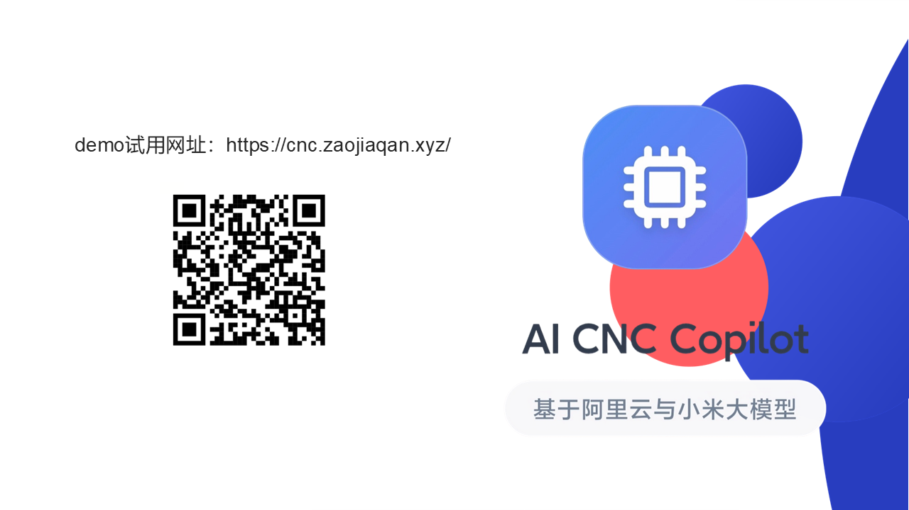
1. 自有源码规模
按项目当前目录统计，剔除依赖库后，自有核心源码约 4547 行，覆盖前端交互、服务代理、AI 分析、规则生成、仿真渲染、多端配置和辅助模块等多个方面。对于大学生团队项目而言，这一规模已经足以证明产品原型不是简单页面拼装，而是具备真实工程实现深度。
2. 关键模块明细
SimulationPanel.tsx约 809 行，是三维仿真与刀具动画的核心模块。LiveSession.tsx约 585 行，承载实时音视频交互能力。App.tsx约 529 行，负责全局状态和核心业务流程编排。modelService.ts约 392 行，负责多模型调用与上下文组织。ChatPanel.tsx约 342 行，负责输入、模型选择、模式切换和消息展示。cncGenerator.ts约 317 行，负责规则化 G 代码生成与基础审查。CodePanel.tsx约 264 行，负责代码查看、复制、下载与安全审查展示。
3. 架构意义
这些模块共同组成了一条清晰的产品链路：用户从界面输入需求，系统通过模型服务得到结构化结果，再通过规则引擎生成 G 代码，通过仿真模块重建路径和几何结果，再由工艺单、刀具库和多端模块完成管理与交付。
4. 可信度说明
在竞赛答辩中，展示部分源码结构和功能模块比空谈愿景更有说服力。因为评委希望看到的是“项目已经做到哪一步”，而不是“团队想象自己未来能做到什么”。
三十二、附录二：产品流程示例
1. 示例一：教学孔板加工
教师输入：“在 100×100×20 的铝合金毛坯上，先面铣，再在四角钻 8 毫米孔。”系统首先解析毛坯尺寸与材质，再给出面铣工序和钻孔工序参数，随后生成 G 代码并在仿真区显示去料结果。学生可以继续追问“如果孔位改到边距 10 毫米怎么办”，系统会在已有上下文基础上继续生成新结果。
2. 示例二：创新团队矩形型腔件
学生团队上传结构说明或草图，描述“中心开一个 40×60、深 5 毫米矩形型腔，再保留中间凸台”。系统可先生成矩形型腔，再通过凸台工序表达保留岛屿区域，并在仿真区展示最终几何效果。这种过程非常适合竞赛展示。
3. 示例三：企业标准轮廓件
工程人员输入轮廓加工需求，系统生成轮廓工序和对应刀路，随后在代码面板中进行人工复核，再在仿真区检查轮廓闭合和退刀路径，最后导出程序和工艺单。这样既保留人工审核，又减少前期重复劳动。
4. 示例四：实时辅导场景
用户通过实时语音/视频功能描述问题或展示工件，系统结合音视频信息和语音交互做辅助说明。这种场景特别适合实训指导和远程辅导，是项目未来可进一步扩展的亮点。
工程应用流程图解
选取 PPT 中的流程页，完整展示从启动、输入、分析、仿真到导出生产的典型工程闭环。
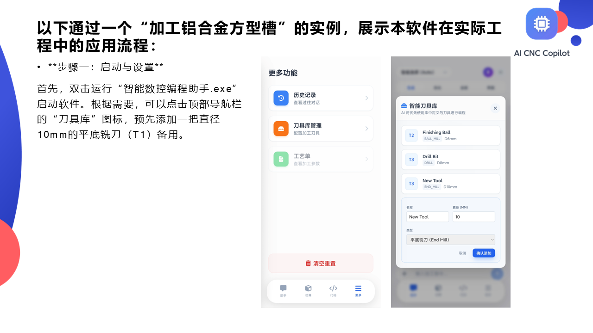
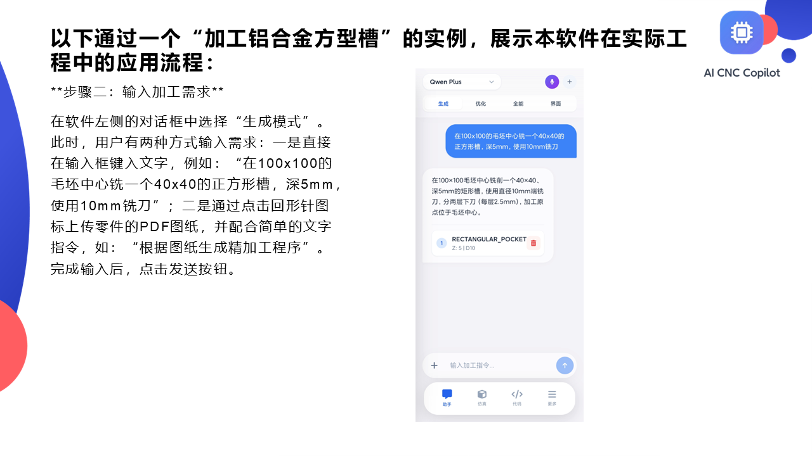
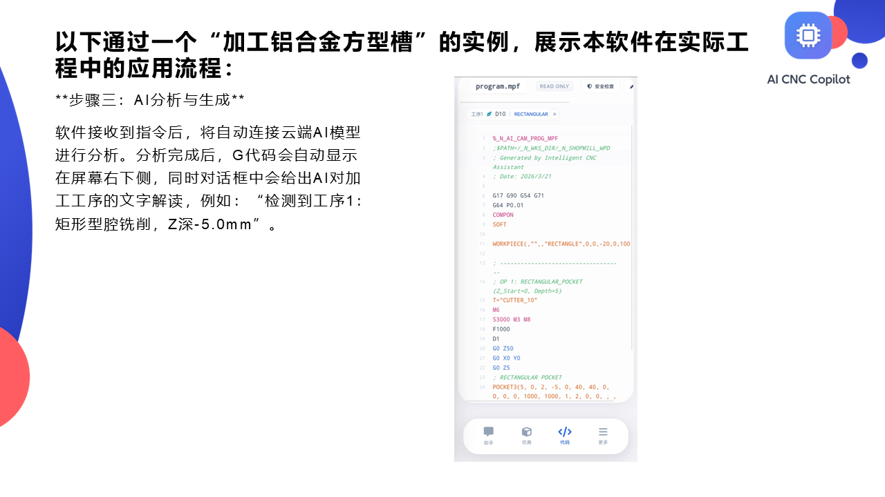
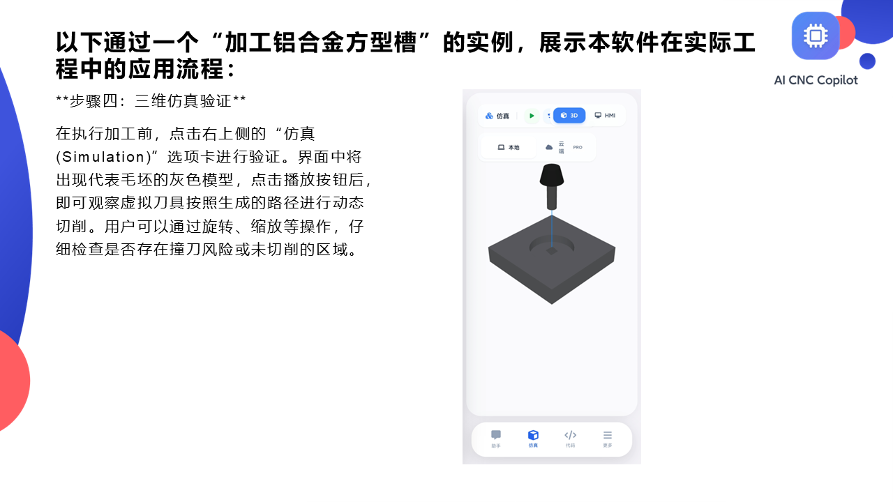
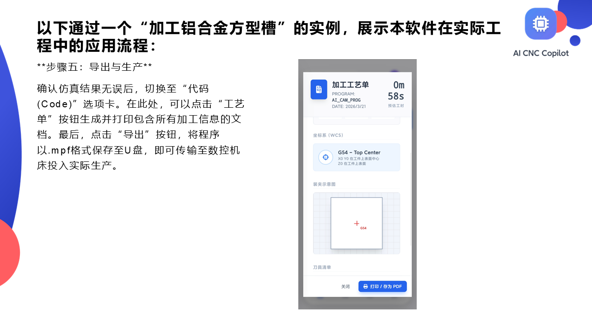
三十三、附录三：功能、价值与收费映射
1. 智能工序生成
用户价值在于节省编程时间、降低学习门槛、减少重复劳动。商业价值在于它是最核心的订阅功能，可作为教育版和企业版的基础能力。
2. 三维仿真
用户价值在于提升可信度、减少试错、增强教学直观性。商业价值在于它是项目与普通问答工具区分度最高的能力之一，也是拉动付费的重要模块。
3. 刀具库和工艺单
用户价值在于形成更完整的工艺管理体验。商业价值在于增强产品完整度，提高续费率和组织内使用频率。
4. 多端部署
用户价值在于降低场景限制。商业价值在于扩大项目触达面，特别是在教学和展示场景中显著提高使用便利性。
5. 私有化与服务
用户价值在于数据安全和组织适配。商业价值在于更高客单价和更强客户粘性。
三十四、附录四：财务测算详细口径
1. 测算方法
财务测算按照“客户数量 × 平均合同额 + 服务收入”构建，并根据阶段不同调整成本结构。早期更多考虑试点与课程服务，中期更多考虑标准版订阅和定制项目。
2. 收入口径
教育版按校授权计费，企业版按席位或按工厂计费，私有化按项目计费，培训按场次或课程包计费。为保持保守性，测算中不把所有潜在接触客户都计入成交客户。
3. 成本口径
成本中最重要的是研发、模型调用、试点交付和市场推广。由于项目早期需要频繁试错，因此研发和试点成本在前两年占比会更高。
4. 盈利拐点判断
当教育端形成稳定续费、企业端形成标准试点模板、培训服务形成稳定现金流后，项目有望在第二年至第三年之间逐步进入更健康的利润状态。
三十五、附录五：阶段目标与关键指标
1. 产品指标
- 工序生成成功率。
- 仿真完成率。
- 代码审查触发率与修复率。
- 多端版本稳定性。
2. 用户指标
- 试用用户数量。
- 周活跃用户数量。
- 单用户平均生成次数。
- 教师课程复用率。
3. 商业指标
- 试点客户数量。
- 付费转化率。
- 客单价。
- 续费率。
4. 项目管理指标
- 版本迭代周期。
- 关键缺陷修复周期。
- 新案例模板产出数量。
- 合作伙伴数量。
三十六、附录六：术语表与常见问题
1. 自然语言编程
指用户通过中文或语音描述加工需求，而不是直接书写 G 代码，由系统帮助完成结构化表达与程序生成。
2. 结构化工序对象
指模型先输出统一字段格式的工序信息，例如工序类型、坐标、深度、刀具、进给等，再由规则引擎转换为程序。
3. G 代码
指数控机床常用的指令表达形式，用于控制刀具运动、主轴启停、进给等行为。
4. 三维仿真
指在程序生成后，通过图形渲染和几何运算直观展示材料去除与刀具轨迹过程。
5. 为什么这个项目适合大学生创业
因为它兼具技术创新、场景清晰、演示效果强、可从校园起步、易形成样板和可持续扩展等特征，适合大学生团队以较低成本快速推进。
6. 为什么这个项目不是空想
因为项目已经具备实际源码、实际功能和实际运行界面，能够在当前阶段直接完成对话输入、程序生成、仿真显示和工艺输出的基本闭环。
三十七、附录七：学校试点合作方案
1. 试点目标
学校试点合作的目标，不只是“让老师和学生体验一下软件”，而是把灵语智造真正嵌入某个具体教学场景，例如数控编程课程、机电一体化实训课程、创新创业训练项目或竞赛训练营。只有当产品进入真实教学环节，项目才能获得最有价值的反馈。
2. 试点形式
学校试点可分为三种形式：第一种是课堂展示试点，由教师在课堂上直接展示生成与仿真流程；第二种是实验实训试点，由学生实际使用系统完成作业或练习；第三种是竞赛试点，由指导教师和学生围绕真实项目进行训练。三种形式层层递进，便于逐步提升合作深度。
3. 试点输出
一次完整的学校试点，建议沉淀出以下成果：
- 若干适合教学演示的典型零件案例。
- 教师使用说明和学生上手说明。
- 课程场景中的问题清单与优化建议。
- 若干演示截图、演示视频和应用反馈。
4. 合作价值
对学校而言，试点合作能获得一套更适合教学展示和学生理解的智能化工具；对项目而言，试点合作能带来真实用户反馈、案例沉淀和品牌背书。两者之间具有较强的正向循环。
三十八、附录八：企业试点合作方案
1. 企业试点原则
企业试点必须遵循“小切口、低风险、快反馈”的原则。创业团队不应一开始就承诺覆盖复杂生产场景，而应优先选择标准件、练兵件、样件和规则较清晰的二维轮廓件场景，通过试点证明效率和易用性。
2. 企业试点流程
一套推荐的试点流程是：先调研企业现有编程方式与设备情况，再选择一到两个典型工件作为试点对象，然后用灵语智造生成初稿程序和仿真结果，最后由企业工程人员复核并反馈差距。通过这种方式，项目能迅速知道自己在哪些环节真正创造了价值。
3. 企业关注点
企业通常最关心四个问题：输出是否可靠、结果是否可改、数据是否安全、投入是否值得。灵语智造在试点时应围绕这四点重点回应，而不是过度强调技术概念。
4. 试点后的转化路径
一旦试点证明在标准工序场景中可用，就可以从“单工件试点”转向“岗位辅助工具”，再从岗位辅助逐步转向“团队协同工具”和“私有化部署工具”。这是更符合企业采购习惯的推进路径。
三十九、附录九：项目版本规划
1. 版本一：可演示原型版
这一版本重点在于完成自然语言输入、结构化工序输出、G 代码生成、仿真展示和工艺单输出，确保项目在比赛、课堂和试点场景中具备完整演示能力。当前项目已经基本达到这一阶段。
2. 版本二：稳定试用版
下一步需要加强的是稳定性、规则覆盖、异常处理、部署方式和案例模板。稳定试用版应能让教师和学生在多次课程中反复使用，也能让企业在若干标准工件场景下持续试用。
3. 版本三：商业交付版
商业交付版需要进一步补齐账号体系、权限管理、日志记录、私有部署、知识库适配和更多后处理能力，使其具备真正签约和交付的条件。
4. 版本四：平台生态版
平台生态版意味着项目不再只是一个软件，而是围绕课程、案例、模板、设备、服务和伙伴关系形成协同生态。这一阶段的核心不只是卖软件，而是形成持续增长的产品平台。
四十、附录十：答辩演示脚本参考
1. 第一段：问题切入
建议先从一个具体问题切入，例如“为什么很多学生懂结构却不会编程”“为什么企业基础件编程仍然依赖熟手经验”。这样评委更容易进入场景，而不是一开始就被抽象技术名词包围。
2. 第二段：产品演示
随后直接展示输入一句加工需求，系统生成工序、程序和仿真结果。演示时间不宜过长，但一定要完整经过“输入、生成、验证、导出”四个环节，因为这正是项目闭环价值的集中体现。
3. 第三段：技术亮点
在演示之后，再解释项目为什么可靠：因为我们不是直接让模型输出任意代码，而是先输出结构化工序，再用规则引擎生成程序，并用三维仿真和代码审查提升可信度。
4. 第四段：商业路径
最后再讲市场和商业模式，强调先做教育与试点、再做企业转化、再做私有化和生态合作。这样答辩逻辑会更顺，也更符合评委判断习惯。
四十一、附录十一：教师、学生与企业三类价值清单
1. 对教师的价值
教师最需要的是讲得清楚、演得出来、学生愿意跟着做。灵语智造可以帮助教师用更低成本展示工艺逻辑、解释代码结果、引导学生观察刀路和材料去除过程，从而提升课堂效率。
2. 对学生的价值
学生最需要的是把抽象知识变成可见结果。项目通过对话、仿真和代码联动，使学生能够理解“我说了什么”“系统理解了什么”“程序为什么这样写”“工件为什么这样被加工”。这对于激发学习兴趣尤其重要。
3. 对企业的价值
企业更关注效率、成本和风险。灵语智造在企业中的价值不是替代所有工程师，而是减少重复性工作、帮助新人更快上手、帮助管理者更直观看到程序结果。
4. 对合作伙伴的价值
对设备商、培训机构和渠道伙伴来说，项目可以作为增强自身产品与课程竞争力的软件能力，形成联合推广与共同服务的新模式。
四十二、附录十二：数据资产与知识库建设思路
1. 为什么要建设知识库
随着试点增多，项目会积累大量案例、常见问法、工艺模板和典型参数。如果这些内容只是散落在聊天记录或临时文档中，价值会被大大浪费。建立结构化知识库，是项目从“会生成”走向“越用越强”的关键。
2. 可以沉淀哪些资产
项目可沉淀的资产包括：典型零件模板、课程案例模板、常见刀具参数模板、企业场景标准工序模板、常见错误修正建议和设备适配说明等。
3. 知识库的商业意义
知识库不仅能提升生成质量，也能成为私有化部署和行业版产品的重要组成部分。未来不同学校、不同企业甚至可以拥有属于自己的专属模板库，从而形成更强粘性。
4. 实施建议
项目早期无需追求复杂系统，可先从案例归档、标签化管理、常见问法沉淀和模板版本管理做起，逐步走向更完整的知识库体系。
四十三、附录十三：渠道合作对象清单
1. 校内合作对象
校内合作对象主要包括机械学院、智能制造学院、职业技术学院、创新创业学院、工程训练中心、实验教学中心和校内双创基地。这些单位往往同时承担课程教学和竞赛指导任务，是项目最合适的首批落地伙伴。
2. 校外合作对象
校外合作对象可包括职业培训机构、地方产业学院、设备厂商、本地机加工企业、创客空间、科技园孵化器和产业服务平台。项目在不同合作对象中承担的角色可能不同，但都能形成真实场景和案例积累。
3. 合作优先级
优先级建议遵循“容易验证价值的先做、容易形成样板的先做、容易带来持续合作的先做”原则。这样既能控制资源消耗，也能让团队更快积累成功案例。
4. 渠道合作的底层逻辑
渠道合作不是简单让别人帮忙卖软件，而是让合作伙伴觉得“这套工具能帮助他们更好完成自己的工作”。只有站在合作伙伴价值角度设计合作模式，项目渠道才能真正跑通。
四十四、附录十四：中长期战略愿景
1. 三年愿景
在未来三年内，灵语智造希望成为校园数控编程教学与竞赛训练场景中具有代表性的智能平台，同时在标准件和样件辅助编程领域形成一批企业案例。
2. 五年愿景
在更长期视角下，项目希望从“AI 数控编程平台”成长为“智能制造教学与轻量生产协同平台”，围绕课程、案例、仿真、知识库和服务形成更完整生态。
3. 品牌愿景
灵语智造希望传达的，不只是一个产品名字，而是一种理念：让更多人用更自然的方式接近制造、理解制造、参与制造，让 AI 真正成为制造教育和制造实践的桥梁。
4. 对团队的要求
要实现这一愿景，团队必须保持两个能力：一是持续做真实产品的能力，二是持续进入真实场景的能力。只有这两种能力同时存在，项目才能从比赛项目真正成长为创业项目。
四十五、附录十五：课程应用样例设计
1. 样例一：基础坐标与钻孔教学
在基础课程中，教师可设计“孔板加工”作为第一类训练样例，让学生学习毛坯设置、坐标系定义、钻孔参数与程序结构。灵语智造能够帮助教师快速生成示例代码，并通过仿真让学生理解每个孔位与路径之间的关系。
2. 样例二：型腔与凸台综合训练
在进阶课程中，可引入矩形型腔和凸台综合训练件，让学生学习材料去除、保留岛屿、加工顺序和不同刀具选择。系统的连续对话能力特别适合展示“先粗后精、先去料后保形”的思路。
3. 样例三：竞赛项目训练
对于竞赛训练，可围绕真实赛题结构件建立案例，让学生从图纸理解、工艺设计、程序生成到仿真验证形成完整训练闭环。相比单纯看答案，这种交互式训练方式更容易提升学生的综合能力。
4. 样例价值
课程样例的意义不仅在于课堂能否顺利演示，更在于它们会成为项目后续推广中的标准资产。学校越多、案例越多，项目的教学壁垒和传播能力就越强。
四十六、附录十六：企业采购决策逻辑
1. 谁是决策者
在企业场景中，采购决策通常不会由单一角色完成，而是由老板、生产负责人、编程工程人员和信息化人员共同影响。不同角色关注点不同，因此项目在企业沟通中必须分层表达。
2. 老板关心什么
老板更关心投入产出、培训成本、能否快速看到结果，以及是否能作为企业数字化升级的展示点。因此，对老板的表达应尽量强调效率、轻量试点和后续可扩展性。
3. 工程人员关心什么
工程人员更关心输出结果是否可控、是否方便修改、是否影响现有流程、是否真的能节省时间。对他们的表达应重点落在结构化输出、仿真验证和人工复核空间上。
4. 决策推进建议
因此，企业推进最好从“让一线人员愿意试”开始，再通过小范围试点让负责人看到价值，最后让老板看到可复制性。这样的决策路径更接近真实商业环境。
四十七、附录十七：常见质疑与回应策略
1. 质疑一：AI 真的能用于数控编程吗
回应策略是强调项目并非让 AI 无约束自由生成，而是通过结构化工序和规则引擎把生成过程限制在可控边界内，再配合仿真和审查提高可信度。
2. 质疑二：市场上已经有成熟软件了，为什么还需要你们
回应策略是说明我们不是去正面替代所有成熟工业软件，而是在教学、训练、创客和轻量企业场景中提供更低门槛、更高直观度和更轻量部署的智能入口。
3. 质疑三：学生团队是否能持续做下去
回应策略是展示当前真实代码规模、清晰的阶段目标、已有样板场景和导师支持体系，说明项目已经具备持续推进基础，而不是短期参赛作品。
4. 质疑四：商业化会不会太难
回应策略是强调项目采用先易后难、先教育后企业、先试点后规模的路径，避免一开始就进入重决策、重交付、重认证的高门槛市场。
四十八、附录十八：阶段性成果展示清单
1. 当前已具备的成果
- 完成核心前端交互工作台。
- 完成多模型接入与结构化工序生成逻辑。
- 完成 G 代码规则生成与基础审查。
- 完成本地三维仿真、路径展示和 STL 导出。
- 完成刀具库、工艺单、历史记录与多端适配基础。
2. 适合答辩中展示的成果
适合在答辩现场展示的成果包括界面录屏、生成示例、仿真过程、工艺单页面、移动端或桌面端适配界面，以及关键源码结构图。展示内容越能形成闭环，评委越容易判断项目完成度。
3. 适合申报书中强调的成果
在文字材料中，建议重点强调“已实现能力”和“下一阶段明确计划”之间的衔接，而不是把所有想法都混在一起。这样更显得项目真实、克制、可靠。
项目成果证明与官网入口
项目已完成可访问 demo 部署，能够作为路演演示、课程展示与对外传播入口。通过线上入口、二维码与页面截图共同增强项目成果证明力。
项目已完成线上可访问 demo 部署，可作为评审查看与后续传播入口。
四十九、附录十九：路演材料清单与准备建议
1. 必备材料
建议准备以下路演材料：商业计划书、路演 PPT、产品演示视频、关键界面截图、典型案例清单、团队介绍页、财务预测页和用户场景说明页。
2. 最容易被忽略的材料
很多团队会忽略“用户为什么愿意长期用”的说明。灵语智造需要在路演中清楚说明使用频次、使用场景和收费逻辑，而不仅仅展示技术效果。
3. 路演中的节奏建议
路演节奏建议控制在“问题 - 方案 - 演示 - 技术 - 商业 - 团队 - 财务 - 规划”这一主线之内，避免一开始就陷入过多技术细节。先让评委看懂价值，再解释技术深度，往往效果更好。
4. 材料之间的关系
文字材料负责完整性，PPT 负责抓重点，演示视频负责直观性，现场演示负责可信度。四者之间应相互印证，而不是各讲各的。
五十、附录二十：结语
灵语智造的价值，不仅在于它尝试把 AI 引入数控编程，更在于它尝试用一种更友好的方式重构制造工具的入口。对于学生，它降低学习门槛；对于教师，它提升讲授效率；对于企业，它减少重复劳动；对于创业团队，它提供了一个既能展示、又能落地、还能持续成长的产品方向。
从现在的完成度看，项目已经走出了最难的第一步：不是停留在口号，而是写出了代码、搭好了界面、跑通了流程、做出了可见结果。接下来真正决定项目高度的，将是团队能否持续深入真实场景、持续沉淀案例和规则、持续把原型打磨成产品。如果这一点做到，灵语智造完全有机会从一个大学生创新创业项目成长为面向智能制造教育与轻量制造应用的长期平台。